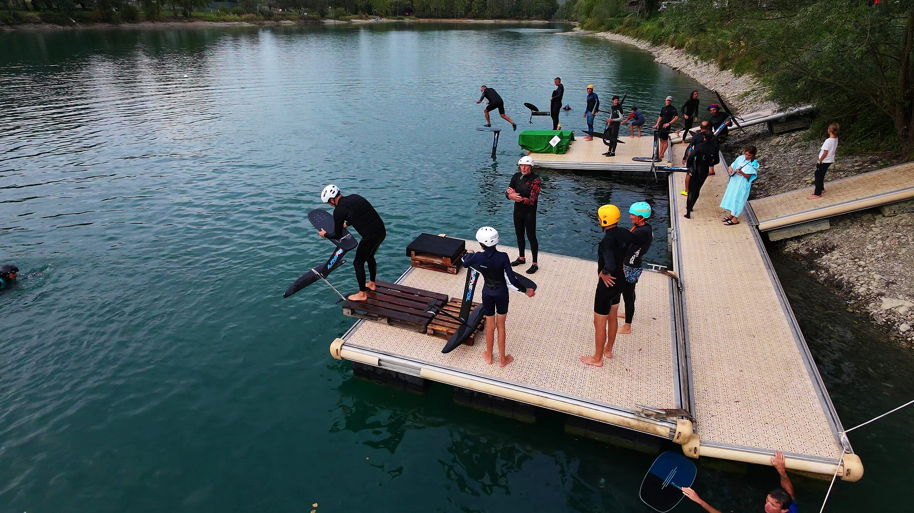

Pumpfoil · Isère · Savoie · Haute-Savoie
Apprendre le pumpfoil au lac de la Terrasse
Débuter le pump foil avec un club, du matériel prêté et des riders qui vous guident : c'est ce que propose Alpine Lake Riders, l'association de pumpfoil des lacs alpins, au ponton du lac de la Terrasse, dans le Grésivaudan, entre Grenoble et Chambéry.

Pumpfoil, pump foil, pumping foil : de quoi parle-t-on ?
Le pumpfoil (on écrit aussi pump foil, et on parle de pumping foil) est une glisse sur eau plate, sans vent, sans vague et sans moteur. On se tient debout sur une petite planche fixée à un foil : une aile sous l'eau qui soulève la planche au-dessus de la surface. Pour avancer, on « pompe » avec les jambes, comme on relance un skate dans une courbe.
La sensation est unique : on vole au-dessus d'un lac transparent, dans un silence total. C'est un sport très complet, accessible à tout âge, qui se pratique hiver comme été avec une combinaison adaptée.
Où apprendre le pump foil près de Grenoble et Chambéry ?
Le spot de l'association est le lac de la Terrasse, base de loisirs intercommunale de La Terrasse (38660), au cœur du Grésivaudan. Il est à environ 30 minutes de Grenoble comme de Chambéry, et facile d'accès depuis toute l'Isère, la Savoie et la Haute-Savoie.
On y ride depuis un ponton flottant pensé pour le pumpfoil : c'est la zone de départ de toutes les sessions et initiations de l'asso. Une eau verte et calme, peu de vent le soir, et une communauté de riders sur place : l'endroit idéal pour débuter le pumping.
Pour voir la température de l'eau et la meilleure heure pour rider, consultez la météo des spots de pumpfoil.
La meilleure façon d'apprendre le pumpfoil
Seul, avec du matériel inadapté, on peut passer des semaines sans décoller. Avec le bon matériel et quelqu'un qui vous guide au ponton, les premiers vols arrivent souvent dès les premières sessions. Voici comment on débute avec l'asso :
- Venir à une initiation. Les dates sont dans l'agenda des sorties. Pas besoin d'avoir son matériel : Alpinefoil prête planches et foils pour découvrir.
- Apprendre le dockstart. Le départ depuis le ponton : une course d'élan, on pose la planche bien à plat, on monte dessus et on pompe tout de suite.
- Trouver le rythme. Pieds centrés sur le mât, genoux souples, petits pompages réguliers. C'est le rythme qui fait voler, pas la force.
- Progresser avec les autres. Aux sessions et aux Apéros Pumpfoil, les riders se conseillent et se coachent entre eux, comme dans un skatepark.
Tous nos conseils pour vos premières sessions sont dans la rubrique Débuter en pumpfoil, et le tuto complet est sur le blog Alpinefoil.
Le dockstart, le départ du ponton
Le dockstart (ou départ ponton) est la façon la plus simple de démarrer en pumpfoil sur un lac : on s'élance depuis le ponton et on part directement en vol. C'est la base de toutes les initiations de l'asso. Damien, gérant d'Alpinefoil et rider de l'association, transmet le geste aux débutants et les accompagne pendant les premiers départs.
Initiations, coaching et conseils
Alpine Lake Riders organise des sessions de ride, des initiations au pumpfoil et au dockstart, et des Apéros Pumpfoil où débutants et riders confirmés se retrouvent. Les conseils et le coaching se font entre riders, au bord de l'eau : on regarde, on corrige la position, on s'encourage.
Pour connaître les prochaines dates, rejoignez le groupe WhatsApp ou consultez l'agenda.
Un club de pumpfoil en Isère, ouvert à la Savoie et à la Haute-Savoie
Alpine Lake Riders est une association loi 1901 née au lac de la Terrasse. L'asso de pumpfoil réunit les pratiquants des lacs alpins, encadre la pratique pour qu'elle se fasse en sécurité et dans le respect des autres usagers, et travaille avec les communes et les gestionnaires des plans d'eau pour garder les spots ouverts et en ouvrir de nouveaux.
Adhérer, c'est soutenir le pumpfoil dans les Alpes et rejoindre une communauté de riders qui aime partager.
Questions fréquentes
Où débuter le pumpfoil en Isère ?
Au lac de la Terrasse, dans le Grésivaudan, avec l'association Alpine Lake Riders. Le spot dispose d'un ponton flottant pour le dockstart, et l'asso y organise des initiations avec du matériel prêté par Alpinefoil.
Faut-il savoir faire du surf ou du wakeboard pour apprendre le pump foil ?
Non. Une expérience de glisse aide un peu, mais beaucoup de riders de l'asso ont débuté sans. Il faut surtout savoir nager, être à l'aise dans l'eau et accepter de tomber souvent au début.
Quel matériel faut-il pour débuter le pumpfoil ?
Une grande aile avant (1 500 à 2 000 cm²) qui porte à basse vitesse, une planche de pump légère, une combinaison adaptée à la saison, un casque et idéalement un gilet d'impact. Inutile d'acheter tout de suite : le matériel est prêté pendant les initiations.
Combien de temps faut-il pour apprendre le pumpfoil ?
Cela dépend de chacun. Avec le bon matériel et quelqu'un pour vous guider au ponton, les premiers vols arrivent souvent au bout de quelques sessions. Le pump est très physique : mieux vaut dix départs bien faits qu'une heure d'épuisement.
Donnez-vous des cours de pump foil ?
L'association propose des initiations au pumpfoil et au dockstart, puis un coaching entre riders pendant les sessions. Les dates sont publiées dans l'agenda et sur le groupe WhatsApp.
Le pumpfoil se pratique-t-il en hiver ?
Oui, avec une combinaison adaptée. La température de l'eau des lacs est suivie sur la page météo des spots. Le ponton du lac de la Terrasse est fermé du 1er novembre au 18 décembre 2026.
Qu'est-ce qu'un Apéro Pumpfoil ?
Le rendez-vous convivial de l'asso : on ride au ponton en fin de journée, puis on se retrouve autour d'un apéro partagé. Débutants, curieux et riders confirmés sont les bienvenus.
Comment rejoindre le club de pumpfoil ?
En adhérant à l'association depuis la rubrique Rejoindre les riders, et en rejoignant le groupe WhatsApp pour être prévenu des prochaines sessions.